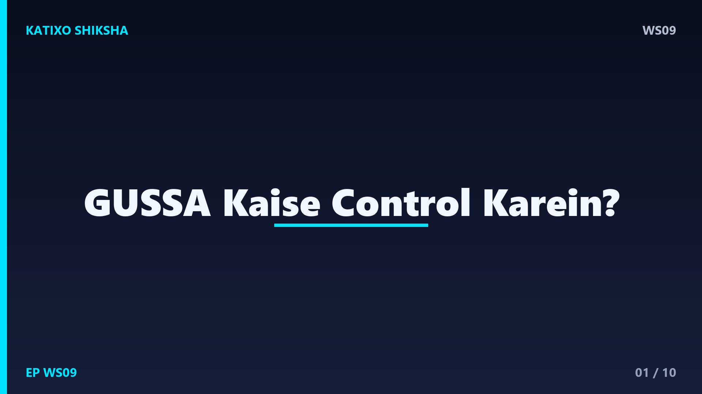
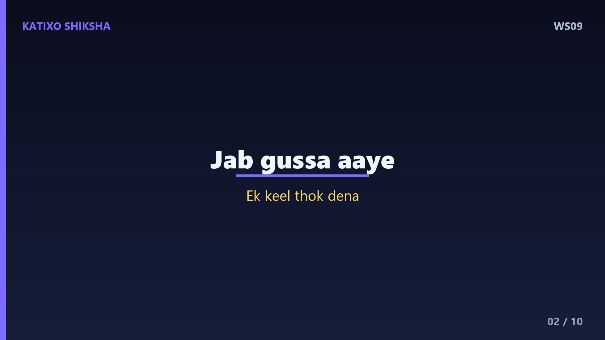
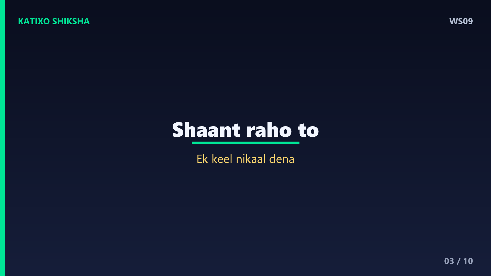
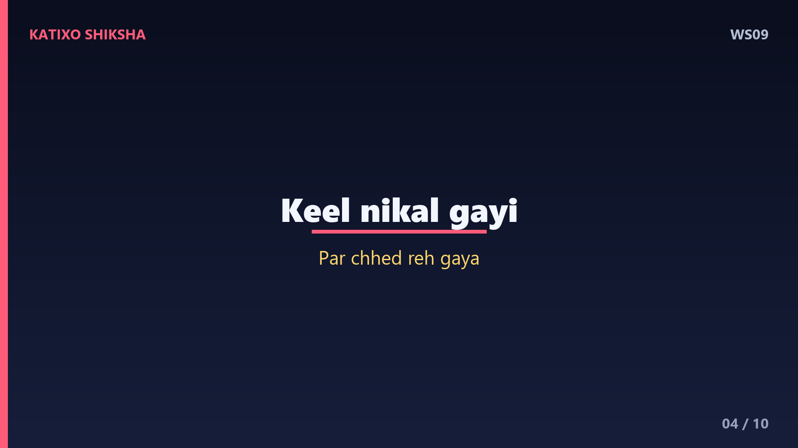
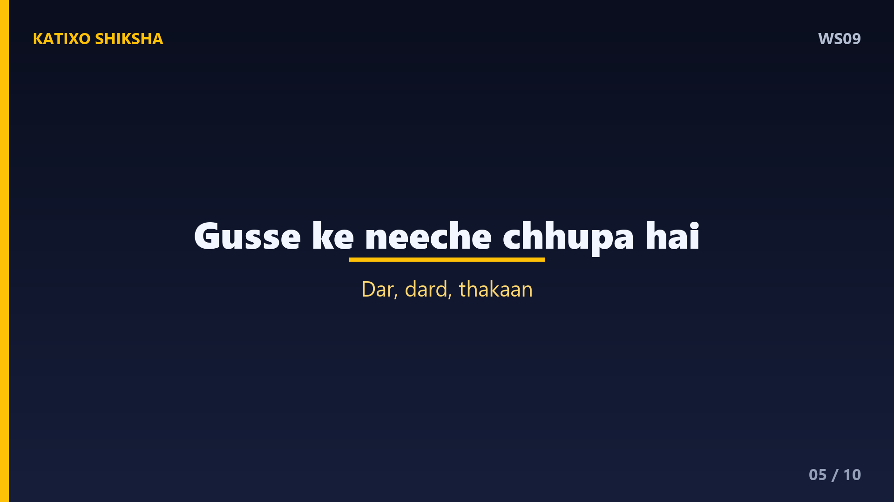
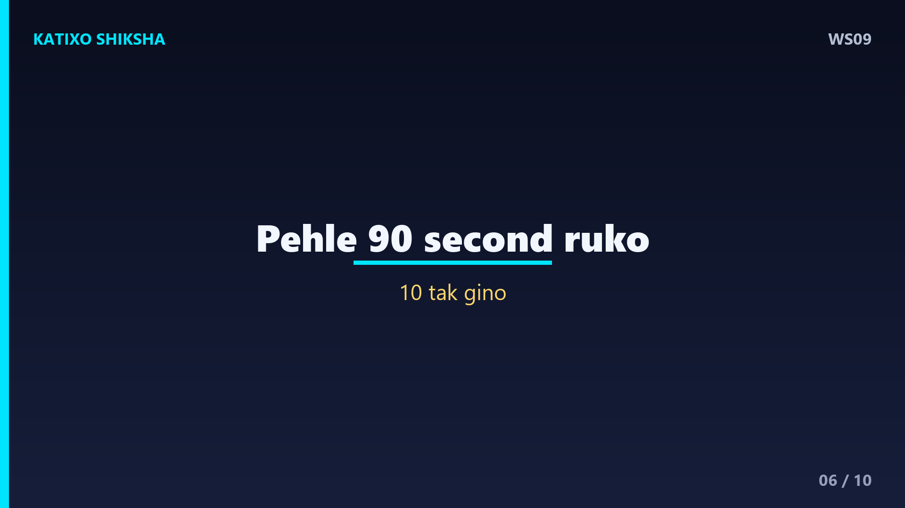
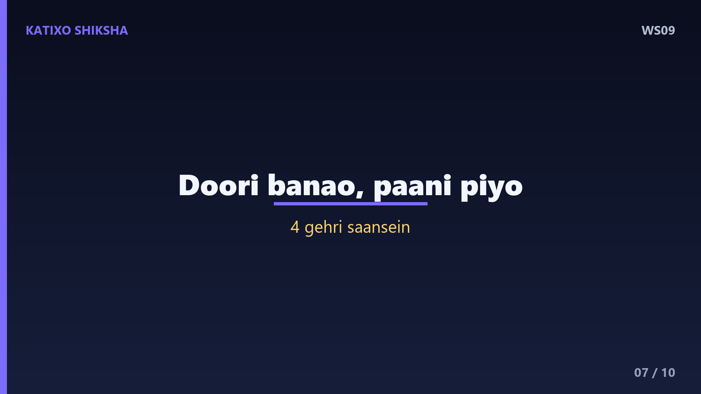
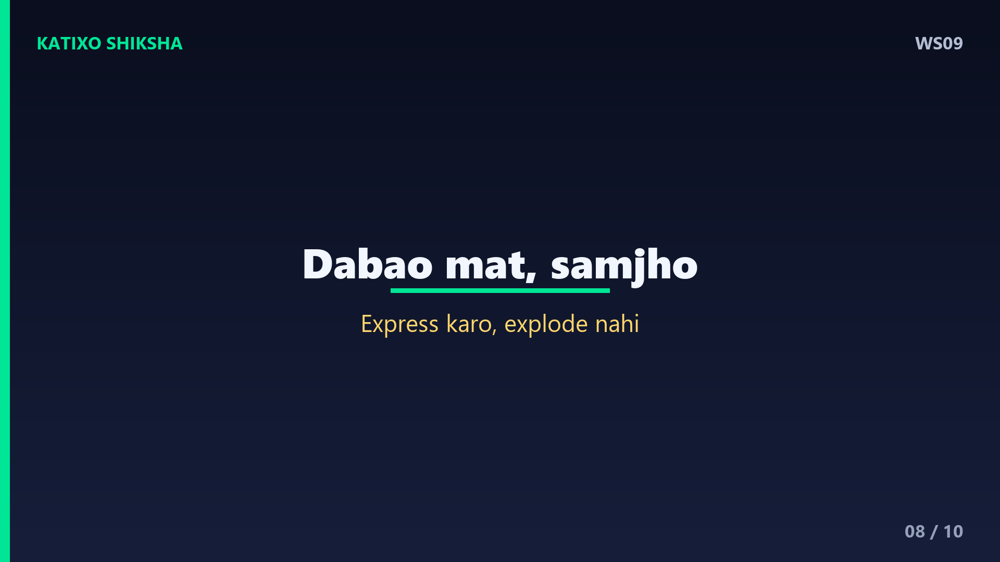
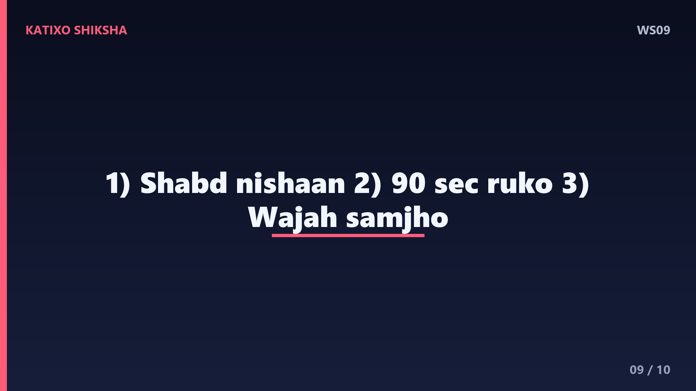
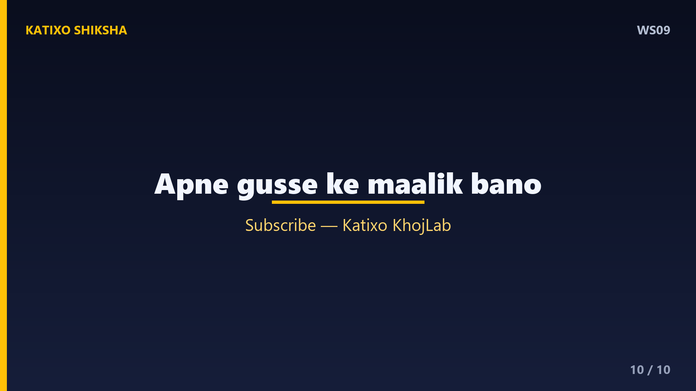

WS09 — Gussa Kaise Control Karein?

Slide 1दोस्तों, क्या कभी ऐसा हुआ है — गुस्से में तुमने कुछ कह दिया या कर दिया, और बाद में बहुत पछताए? वो पल भर का गुस्सा, और सालों का अफ़सोस? Welcome to Katixo KhojLab. आज हम बात करेंगे एक ऐसी आग की, जो अगर control में रहे तो रोशनी देती है, और बेक़ाबू हो जाए तो सब कुछ जला देती है — गुस्सा, यानी anger. आज की कहानी में तुम सीखोगे कि इस आग को कैसे संभाला जाए. चलो शुरू करते हैं।

Slide 2एक बार एक गुस्सैल लड़का अपने पिता के पास गया. बात-बात पर भड़क जाता था, दोस्तों से झगड़ता था. पिता ने उसे कीलों का एक थैला दिया और कहा — जब भी तुझे गुस्सा आए, बाड़े की लकड़ी में एक कील ठोक देना. पहले दिन लड़के ने सैंतीस कीलें ठोकीं. धीरे-धीरे, कील ठोकने की मेहनत से बचने के लिए, उसने अपने गुस्से पर काबू पाना शुरू किया. कुछ हफ़्तों में, उसका गुस्सा काफ़ी कम हो गया।

Slide 3फिर एक दिन ऐसा आया जब उसने एक भी कील नहीं ठोकी. उसने ख़ुशी से पिता को बताया. पिता बोले — अब रोज़, जिस दिन तुम गुस्सा न करो, एक कील निकाल देना. समय बीता, और एक दिन सारी कीलें निकल गईं. पिता उसे बाड़े के पास ले गए और बोले — बेटा, तूने बहुत अच्छा किया. पर देख, इन कीलों ने लकड़ी में छेद छोड़ दिए हैं. ये बाड़ अब पहले जैसी कभी नहीं होगी।

Slide 4पिता ने कहा — जब तुम गुस्से में किसी को कुछ कहते हो, तो वो शब्द ऐसे ही छेद छोड़ जाते हैं. तुम बाद में sorry बोल सकते हो, पर ज़ख़्म का निशान रह जाता है. Lesson नंबर एक — गुस्सा सबसे ज़्यादा नुक़सान उन्हीं को पहुँचाता है जिन्हें हम सबसे ज़्यादा प्यार करते हैं. कील तो निकल जाती है, पर छेद रह जाता है. इसलिए बोलने से पहले सोचो — क्या ये शब्द ऐसा निशान छोड़ेंगे जिसे मिटाया न जा सके?

Slide 5Lesson नंबर दो — गुस्सा असल में एक secondary emotion है. इसके नीचे अक्सर कुछ और छुपा होता है — डर, दर्द, थकान, या बेइज़्ज़ती का एहसास. जब कोई भड़कता है, तो असल में वो किसी गहरी तकलीफ़ से लड़ रहा होता है. अगली बार जब गुस्सा आए, तो ख़ुद से पूछो — इसके पीछे असली बात क्या है? जब तुम जड़ को समझ जाते हो, तो आग अपने आप ठंडी पड़ने लगती है. गुस्से को समझना, उसे जीतने का पहला कदम है।

Slide 6अब एक practical technique — इसे कहते हैं the pause. गुस्से का सबसे ख़तरनाक हिस्सा होते हैं पहले कुछ second. Science कहती है कि गुस्से का रासायनिक तूफ़ान दिमाग में लगभग नब्बे second तक रहता है. अगर तुम उन नब्बे seconds को निकाल लो — बिना कुछ बोले, बिना react किए — तो आग अपने आप कम होने लगती है. इसलिए जब गुस्सा आए, रुको, मुँह बंद रखो, और मन में धीरे-धीरे दस तक गिनो।

Slide 7Technique नंबर दो — deep breathing और physical distance. जब गुस्सा चढ़े, तो उस जगह से थोड़ी देर के लिए हट जाओ. थोड़ा पानी पी लो, या बाहर टहल आओ. साथ ही, चार गहरी साँसें लो — धीरे अंदर, धीरे बाहर. ये तुम्हारे शरीर के alarm system को बंद कर देता है और दिमाग का सोचने वाला हिस्सा वापस active हो जाता है. याद रखो — कोई भी ज़रूरी फ़ैसला या बहस, गुस्से के पल में मत करो. शांत होकर लौटो।

Slide 8एक गहरी बात — गुस्से को दबाना भी सही नहीं है. अगर तुम इसे अंदर ही अंदर भरते रहोगे, तो एक दिन ये और बड़ा फटेगा, या तुम्हारी सेहत बिगाड़ेगा. फ़र्क है express करने और explode करने में. गुस्सा महसूस करना ग़लत नहीं है — उसे शांति से, सही शब्दों में कहना सीखो. किसी को दोष देने के बजाय अपनी बात रखो — मुझे ऐसा महसूस हुआ. Anger एक signal है कि कुछ ठीक नहीं — उसे समझो, दबाओ मत।

Slide 9चलो आज की तीन सबसे बड़ी सीख याद कर लें. पहली — गुस्से के शब्द कील के छेद जैसे निशान छोड़ जाते हैं, इसलिए बोलने से पहले सोचो. दूसरी — गुस्से के पहले नब्बे second रुक जाओ, दस तक गिनो और गहरी साँस लो. और तीसरी — गुस्से के पीछे की असली वजह समझो, उसे दबाओ नहीं, शांति से express करो. ये तीन बातें तुम्हें और तुम्हारे रिश्तों को बचा लेंगी।

Slide 10याद रखना दोस्तों — गुस्सा कमज़ोरी नहीं, पर गुस्से में बह जाना ज़रूर कमज़ोरी है. असली ताक़त उसमें है जो भड़क सकता था, पर शांत रहना चुनता है. अपने गुस्से के मालिक बनो, उसके गुलाम नहीं. हर बार जब तुम रुकते हो और शांति चुनते हो, तुम थोड़ा और मज़बूत बनते हो. अगर ये कहानी तुम्हें पसंद आई, तो Like, share, aur Katixo KhojLab ko subscribe karna mat bhoolna. Milte hain agli kahani mein!